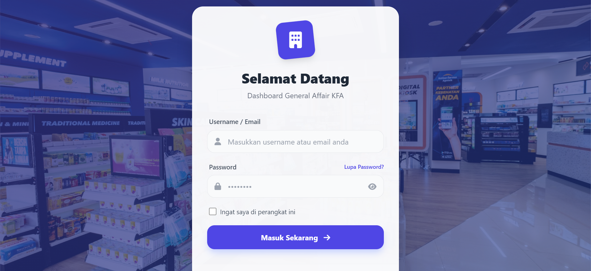

Galeri Screenshot
Tampilan Sistem Monitoring
Klik gambar untuk melihat panel full

Beranda
Ringkasan monitoring umum

Manajemen Aset (GA)
Ringkasan dashboard aset

Manajemen ATK
Katalog & transaksi

Manajemen Biaya
Rekap dan pelaporan

Manajemen Kendaraan
Data kendaraan operasional

Tanah & Bangunan
Aset properti & status

Monitoring Aset
Status & waktu perawatan

Login
Autentikasi pengguna

Driver Dashboard
Ringkasan jadwal & data

Data Mobil
Katalog armada operasional

Data Supir
Status & identitas

Jadwal Tugas
Alokasi tugas operasional